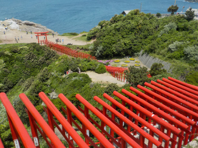
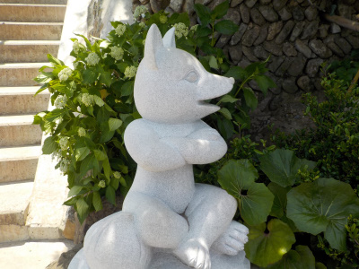
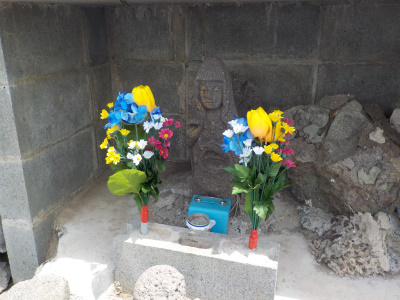
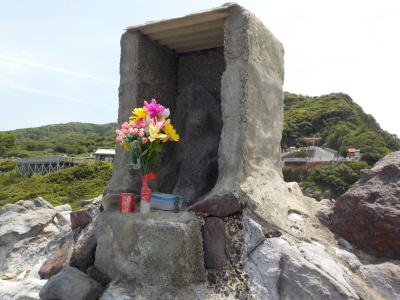
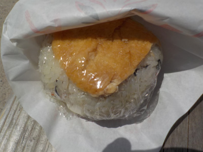
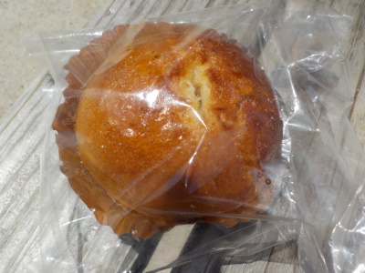

元乃隅神社は思ってたより小さかった
2019/05/25
個人で作った神社と言われるとロマンがあっていいと思うのですが、今あるのは寄贈された新しい鳥居や新しく造られた設備でした。

新しいのでとっても綺麗。
観光のために作られたプチパークですね。

お客さんも多く繁盛していました。 でも正直、小さい。
有料駐車場くらいから赤い鳥居が連続してあればいいのに。
道案内をしてくださった人達には申し訳ないですが、観光パンフレットに大きく載せないでって思いました。


まだまだ開発の余地はありそうなので改良されるといいかも。長門市さん、頑張ってください。

ジャンボいなりはイカが入ってました。特産品かな?。名物っぽいものが食べれて良かったです。

塩バターあんパンありました。想像通りの油っぽさと塩と砂糖です。旅で疲れているので栄養補給になりました。